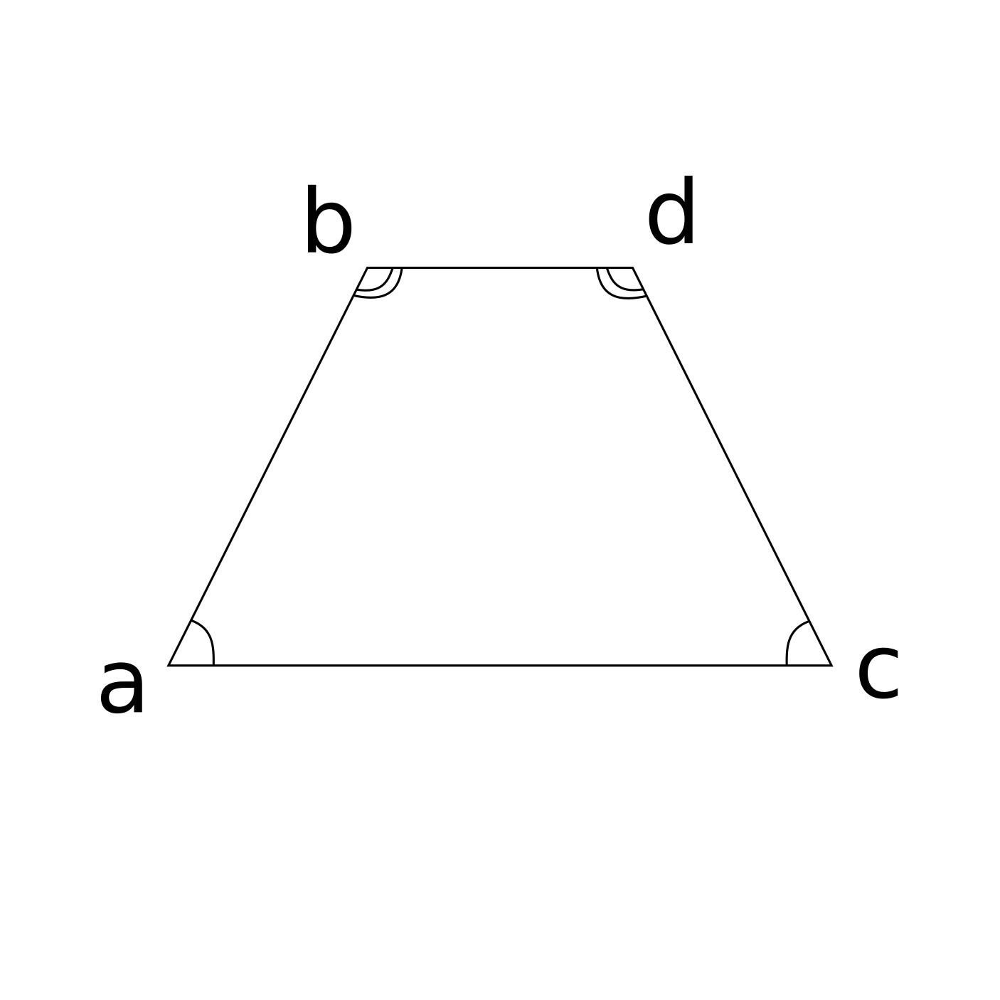

MATHHACK
Зачем думать, когда есть
этот сайт
Площадь
Площадь квадрата
Площадь прямоугольника
Площадь треугольника
Площадь круга
Площадь трапеции
Площадь ромба
Длина
Периметр треугольника
Длина высоты
Длина окружности
Углы
Углы треугольника
Углы многоугольника
Углы трапеции
Уравнения
Линейные Уравнения
Квадратные Уравнения
Средняя линия
Средняя линия треугольника
Средняя линия трапеции
Углы трапеции

Угол равнобедренной
трапеции вычисляется
по формуле
a = 180 - b
где:
a, b - углы трапеции